Follow one real production run — a DISTVNT red sweatsuit — through every stage of our in-house process.
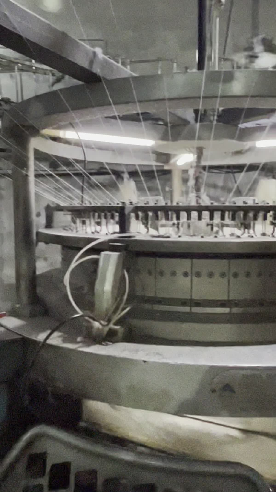
Every roll starts as raw yarn on our own circular knitting machines — full control over weight, weave and stretch before a single dye touches the fabric.
Fabric is dyed in-house and color-matched to spec — the same process behind every colorway in our portfolio, from deep reds to pastel pinks.
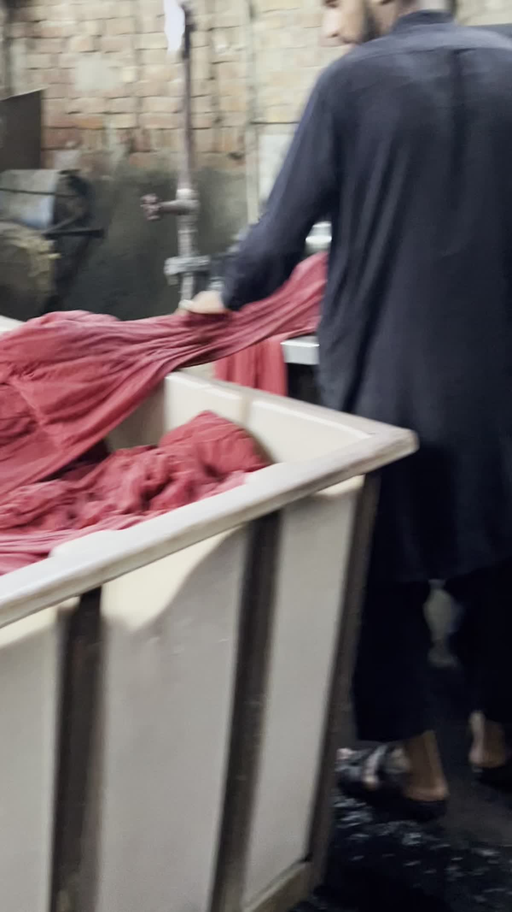
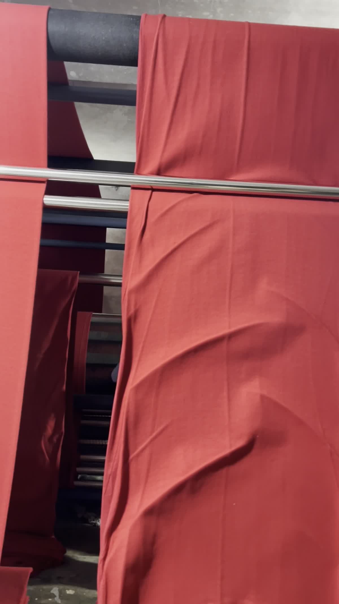
Dyed fleece is raised and brushed for that soft, heavyweight hand-feel — the detail that separates premium sweatsuits from thin blanks.
Panels are cut to pattern for the hoodie and jogger set, ready to move into embroidery and assembly.
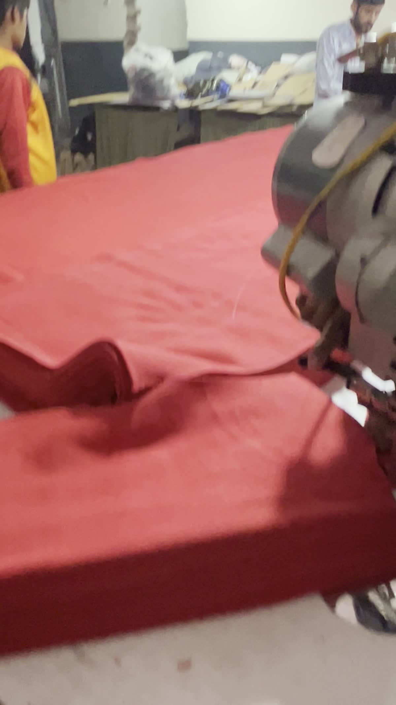
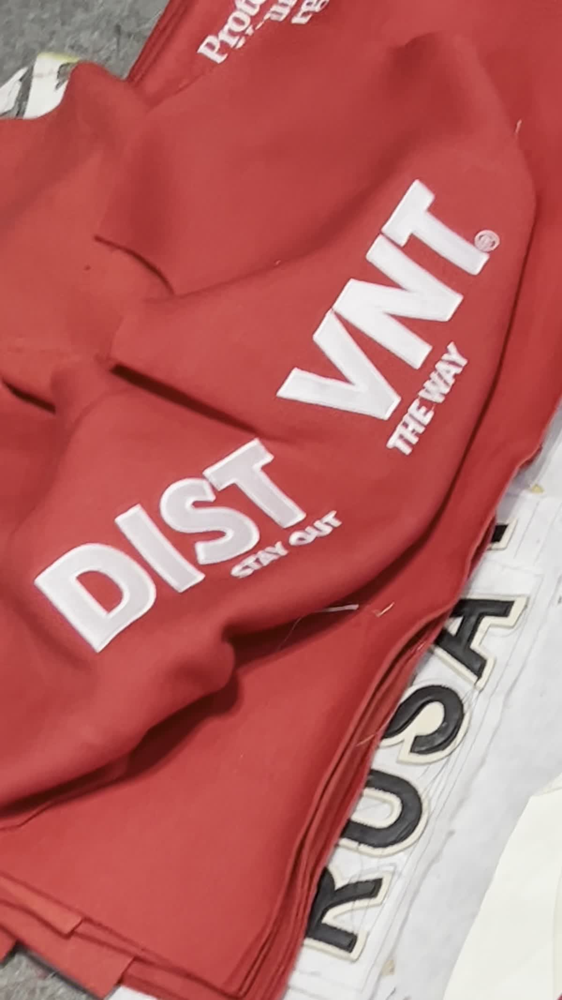
Multi-needle machines stitch the logo and branding — monitored throughout for thread tension and placement accuracy.
Clean, dense stitching with sharp edges — the "DISTVNT · Stay Out The Way" logo fully rendered in two-tone thread.
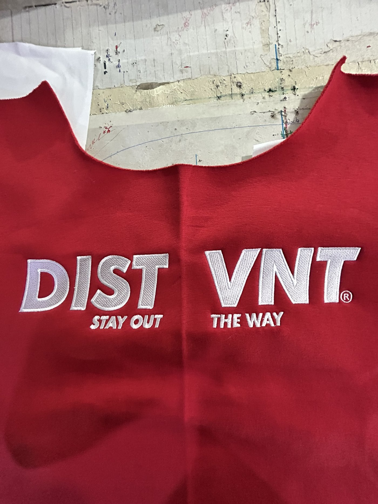
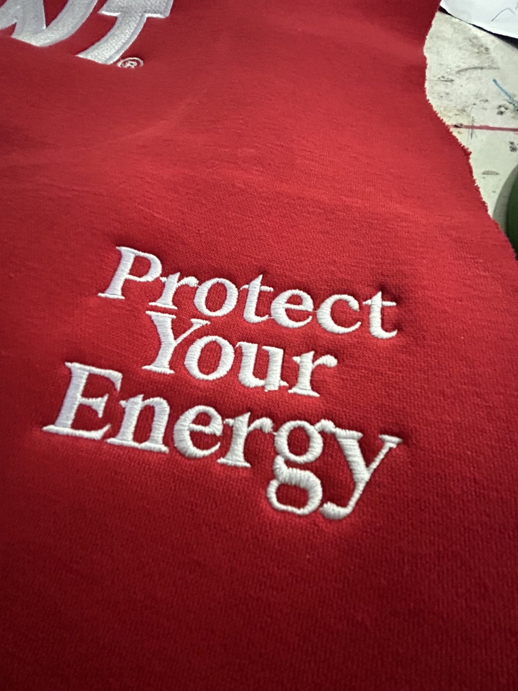
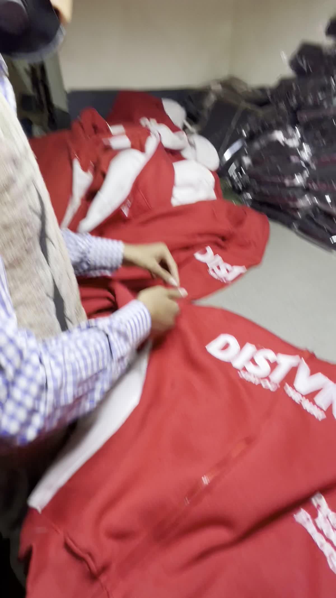
Every seam is checked by hand before a garment moves forward — loose threads, misaligned panels and stitch defects are caught here.
Finished garments are steam-pressed and given a final quality pass for shape, color consistency and finish.
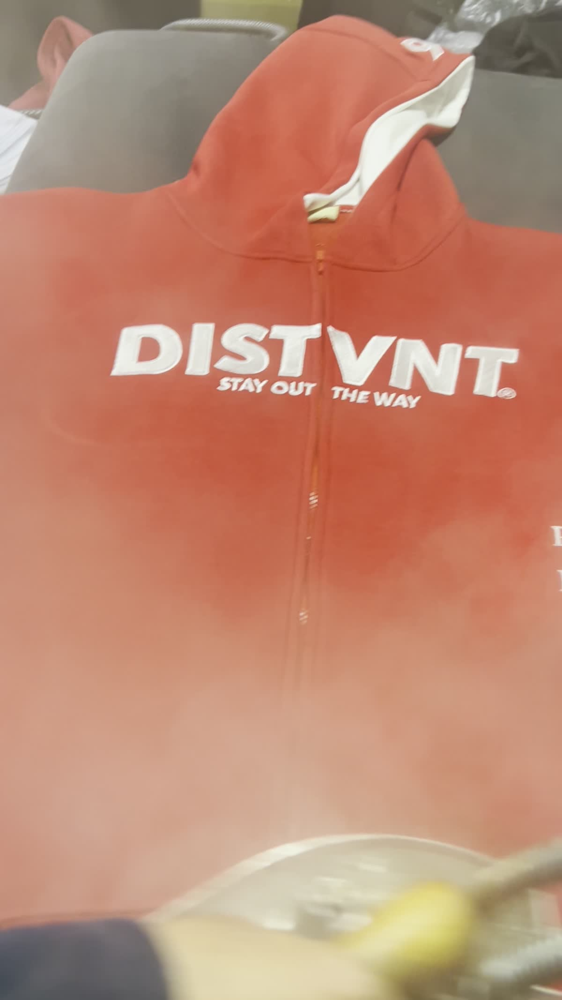
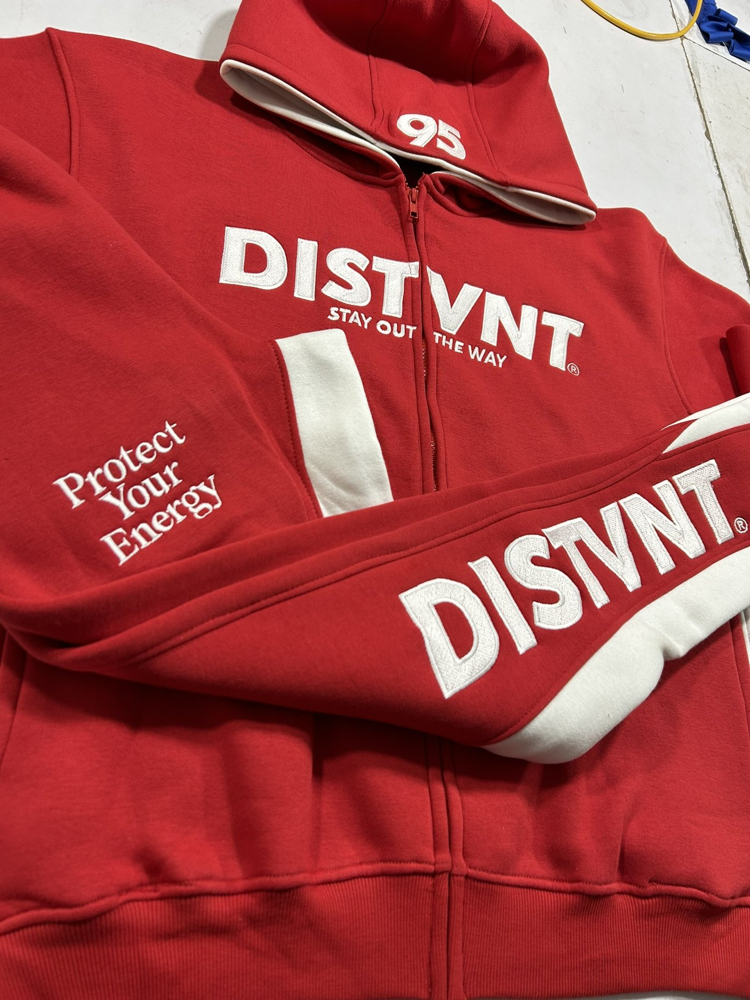
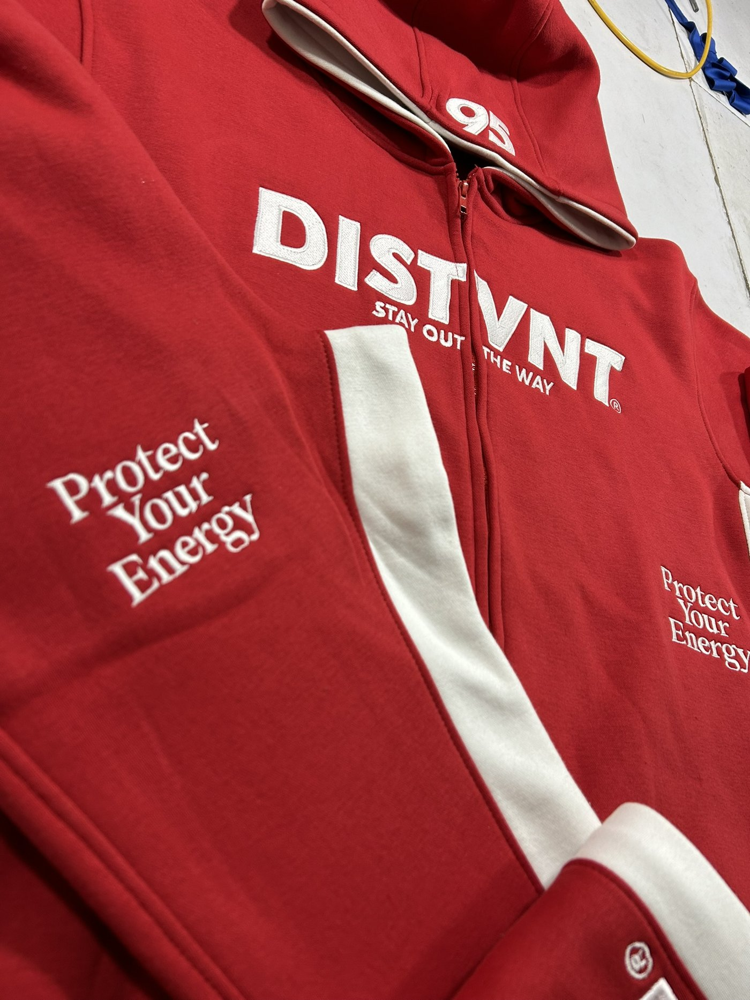
From raw yarn to a finished, retail-ready sweatsuit — every stage handled on our own floor, start to finish.
Send your artwork and we'll walk you through timelines and pricing.
Get A Quote